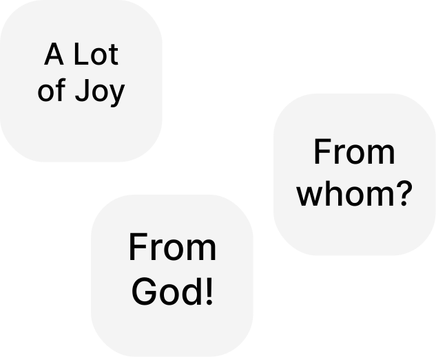

Glory Be to Jesus Christ!
☀️
Romans IX, verses 8-9 tell us what importance is attached to the promise. These words refer to God's children. God promised an heir to Abraham — and the child born of this promise, through this promise, as its fulfilment from God, is God's
because he is really from Him. And of course, the God's is higher than the human's, and therefore higher than the corporeal.
Romans IX, 10 — 'ἡμῶν' - 'emon' - 'us' (our).
Romans IX, 14 — 'παρὰ τῷ θεῷ' - 'para to theo' - 'near God; in the presence of God'.
Romans IX, 19 — 'βουλήματι' - 'boulemati' - 'will; counsel; purpose'. This word is different from the one that actually means desire and will. Therefore, it is appropriate to speak here not of the will of God, but of His permission.
For more information, please refer to the following links:
https://oleksandr-zhabenko.github.io/en/commentaries/26062023.html
https://oleksandr-zhabenko.github.io/en/commentaries/15032023.html
https://oleksandr-zhabenko.github.io/en/commentaries/03042024.html
https://oleksandr-zhabenko.github.io/en/commentaries/17042024.html
https://oleksandr-zhabenko.github.io/en/commentaries/18042024.html
Also see yesterday's reading and links there.
https://oleksandr-zhabenko.github.io/en/commentaries/11072024.html
An incomplete understanding of these places is also another prerequisite for the formation of the complex of ideas of the Russian world
.
See also more information on the readings from the Apostle here:
https://oleksandr-zhabenko.github.io/en/commentaries/23062023.html
https://oleksandr-zhabenko.github.io/en/commentaries/15072023.html
https://oleksandr-zhabenko.github.io/en/commentaries/06062023.html
For more information about the Gospel reading, please refer to the following links:
https://oleksandr-zhabenko.github.io/en/commentaries/23062023.html
https://oleksandr-zhabenko.github.io/en/commentaries/11062023.html
Glory be to Thee, our God, glory be to Thee!